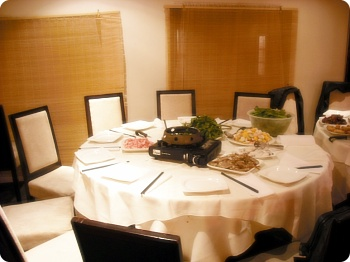
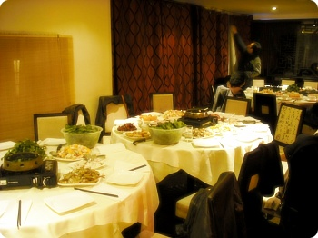
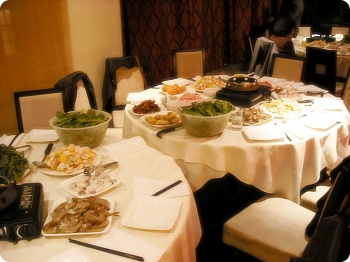
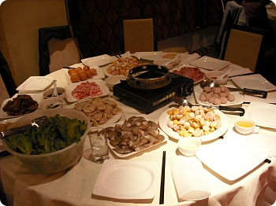
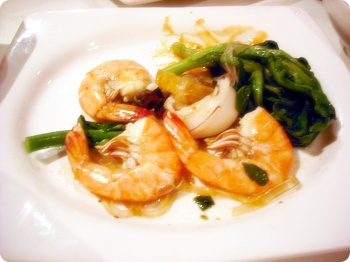
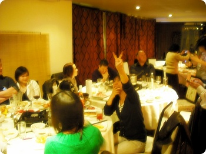

알바하는 곳에서 Chinese new year 파티한다고
(주인부부가 홍콩사람^^***)
시간나믄 밥먹으러 오라고해서 낼름~
공짜밥은 언제나 옳다 ㅋㅋㅋㅋㅋ
(주인부부가 홍콩사람^^***)
시간나믄 밥먹으러 오라고해서 낼름~
공짜밥은 언제나 옳다 ㅋㅋㅋㅋㅋ

샤브샤브 홍콩스타일 이려나~
알바생에 풀타임 직원에 가족에 그 친구들까지
엄청난 대인원이 모였다+_+
알바생에 풀타임 직원에 가족에 그 친구들까지
엄청난 대인원이 모였다+_+

야채랑 해산물이 가득
게다가 무한리필+_+
게다가 무한리필+_+


새우는 정말 원없이 먹고왔다//ㅅ//
오징어도 맛나고 만두랑 어묵도//
오징어도 맛나고 만두랑 어묵도//

이날 히트는 하우스메이트 이자 같이 알바하는 T양 ㅋㅋㅋ
일주일전 밥먹으러 오라고했을때부터
가게 칵테일종류 다 마셔볼테다!! 라고 벼르고있었는데
이날 맥주부터시작해서 칵테일, 정종, 와인까지 종류별로 섭렵 ㅋㅋ
맥주중 生(iki=いき)라고 japanese green tea beer라는 요상한
맥주가 있었는데 황당하게도 회사는 일본이 아님 벨기에
신기해서 한모금 마셔봤는데 이게 어디가 green tea beer야 ㅡㅡ;;
그냥 맥주구먼;;; T양이 홈페이지도 들어가봤는데
양키가 굉장히 japan틱한 분위기를 내려고 애쓴 흔적이 역력했다고;;;;
여.....여튼 부럽다;;
난 열심히 T양이 주문한 술종류 한모금씩 뺐어먹고
콜라/오렌지 쥬스 러쉬를 달렸음
영국살믄 해산물이 젤 궁한데
오랜만에 행복했다 ㅜㅜ
흑흑 새우님///맛났어용///
일주일전 밥먹으러 오라고했을때부터
가게 칵테일종류 다 마셔볼테다!! 라고 벼르고있었는데
이날 맥주부터시작해서 칵테일, 정종, 와인까지 종류별로 섭렵 ㅋㅋ
맥주중 生(iki=いき)라고 japanese green tea beer라는 요상한
맥주가 있었는데 황당하게도 회사는 일본이 아님 벨기에
신기해서 한모금 마셔봤는데 이게 어디가 green tea beer야 ㅡㅡ;;
그냥 맥주구먼;;; T양이 홈페이지도 들어가봤는데
양키가 굉장히 japan틱한 분위기를 내려고 애쓴 흔적이 역력했다고;;;;
여.....여튼 부럽다;;
난 열심히 T양이 주문한 술종류 한모금씩 뺐어먹고
콜라/오렌지 쥬스 러쉬를 달렸음
영국살믄 해산물이 젤 궁한데
오랜만에 행복했다 ㅜㅜ
흑흑 새우님///맛났어용///